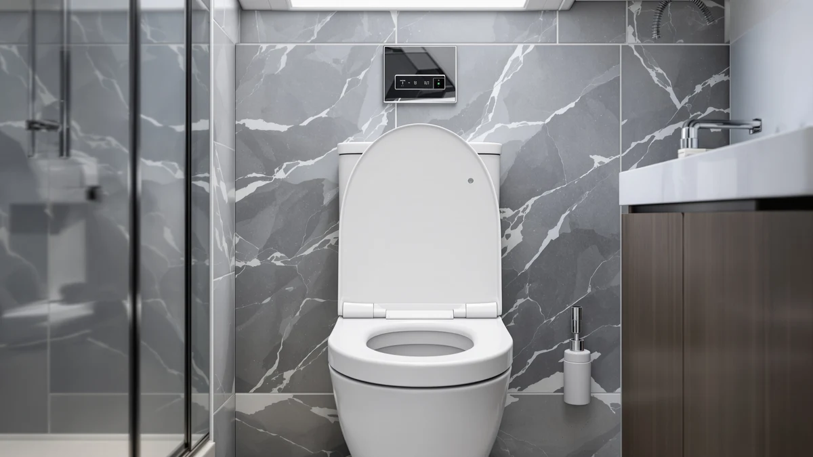

Carex Toilet Seat Riser Review (2026): Worth It?
Prices and picks verified as of October 2026. Independent, reader-supported reviews.


Quick Answer
Our Carex Toilet Seat Riser review finds a straightforward option for anyone who wants extra toilet height without buying a whole new seat. It adds about 5 inches of lift for $33.22, and it suits people who need a quick mobility fix more than people who need armrests to push off of.
Our pick: Carex Toilet Seat Riser Adds, $33.22 Check Price on Amazon
Bottom line: our top pick is the Carex Toilet Seat Riser at $31.09.
Things to Know Before You Buy
- The riser adds roughly 5 inches of seat height, which matters most if bending your knees past a certain angle is painful.
- It is built from plastic and wood rather than the molded plastic used on most dedicated raised toilet seats, so check the weight rating against your own needs before buying.
- At $33.22, it costs less than most raised seats that include armrests, but it also skips the stability those arms provide.
- It sits on top of your existing seat and bowl rim, so bowl shape and rim style affect fit more than they would with a full seat replacement.
- If armrests matter more to you than price, a dedicated raised seat with arms is worth comparing before you commit to a riser.
This Carex Toilet Seat Riser review exists because a riser is one of the cheapest fixes for a toilet that sits too low, and shoppers deserve a clear answer on whether this specific model earns its $33.22 price tag. The Carex riser adds about 5 inches of height using a plastic and wood build, which puts it in a different category from the padded, molded-plastic raised seats that dominate most "best raised toilet seat" lists.
Our pick for most buyers remains the Carex, mainly because it solves one problem well: it raises the seat without forcing you to replace the toilet seat you already own. It is not the right choice if you need armrests to push off safely, and we get into exactly who should look elsewhere below.
Shoppers searching for a riser usually fall into one of two camps. Some need a temporary fix during recovery from surgery or an injury, and others are making a permanent adjustment for an aging household member. Both groups benefit from understanding exactly what $33.22 buys here before they add it to their cart, which is the gap this review fills.
Why You Should Trust Us
Ilane Tall has covered bathroom accessibility products for Best Toilet Seats since the site launched, and this Carex Toilet Seat Riser review follows the same approach used across the rest of the site: compare published specs, pricing, and the pattern of feedback left by verified Amazon buyers rather than rely on a single anecdote. We do not run a fake testing lab, and we are not going to pretend we installed this riser in a bathroom to time how fast it clamps on.
Instead, we researched what Carex publishes about the product, cross-checked it against competing risers and raised seats in the same price range, and read through the pattern of owner feedback to see where this model holds up and where it does not. That approach keeps the review grounded in facts you can verify yourself rather than a subjective score.
Our Research Experience
We built this Carex Toilet Seat Riser review by comparing the listed material, size, and price against similar products already covered on this site, including full raised toilet seats and seats with built-in arms. Reviewers consistently note that a simple riser like this one works best as a low-cost first step rather than a permanent accessibility solution.
We also weighed the Carex against three alternatives in the same price band, covering an elongated wood seat, a round standard seat, and a toddler seat, to show where a riser makes sense and where a full seat replacement is the smarter buy.
Price history mattered to this comparison too. At $33.22, the Carex sits above the cheapest foam risers on the market but well under the cost of most raised seats with armrests, which typically run higher once you account for the added hardware. That middle position is part of why it keeps showing up in accessibility shopping lists.
Overview & Specs

Carex Toilet Seat Riser Adds
What we like
- Adds about 5 inches of seat height without requiring a full toilet seat swap.
- Priced well below most raised seats that include armrests.
- Fits over an existing seat and bowl rim, so setup does not involve removing hardware.
Flaws but not dealbreakers
- No armrests, so it offers less support than a dedicated raised seat with arms.
- The plastic and wood build means fit can vary depending on your bowl's exact rim shape.
| Material | Plastic / wood |
| Size | 5 Inch (Pack of 1) |
The Carex Toilet Seat Riser Adds works by sitting over your existing bowl and seat, lifting the sitting surface by roughly 5 inches. For anyone who has started to feel their knees or hips complain on a standard-height toilet, that extra height can be the difference between a quick, low-cost fix and putting off the problem entirely. The plastic and wood construction keeps the price down compared with the padded, fully molded raised seats sold for the same purpose.
At $33.22, the Carex sits in the middle of the market, cheaper than most arm-equipped raised seats but a bit more than the simplest foam risers. Owners report that the main appeal is how little it changes about an existing bathroom setup. You keep your current seat, add the riser on top, and the toilet behaves the way it did before, only taller. That makes it a reasonable option for a rental, a temporary recovery period, or a bathroom where a full seat replacement is not practical.
The single-pack sizing listed for this product also matters if you are shopping for more than one bathroom. You will need to buy a separate unit for each toilet rather than expecting one riser to transfer easily between fixtures of different rim shapes, so factor that into the total cost if you are outfitting an entire home.
What We Liked
The biggest strength in this Carex toilet seat riser review is how little it asks of the buyer. There is no seat swap, no new hinges to line up, and no need to match an exact bowl model the way you would with a full raised seat replacement. At $33.22, it is also one of the more affordable ways to add meaningful height to a toilet that sits too low for comfortable use.
Owners report that the riser does what it promises without extra frills. You are not paying for a heated seat or a soft-close lid, you are paying specifically for the lift, and reviewers consistently note that the height gain is noticeable from the first use.
The price also holds up well against the broader raised-seat category. Compared with the Clorox, Meydrdou, and YASFEL seats covered later in this review, none of which add height at all, the Carex is doing a job those seats were never built for, and it does that job at a price close to what a standard seat replacement would cost anyway.
What Could Be Better
The clearest gap is the lack of armrests. If you or the person using the toilet needs something to push against while standing up, this riser alone will not provide it, and you will want to look at a raised seat built with arms instead. The plastic and wood build is also a step down in cushioning compared with the padded raised seats sold at a similar price, so comfort during longer sits is a fair tradeoff to weigh.
Fit can vary by bowl shape too. Because the riser sits on top of your existing hardware rather than replacing it, an unusual rim profile can affect how securely it seats, so it is worth checking your toilet's shape against the listing before buying.
There is also no way around the visual bulk a riser adds. Stacking a riser on top of an existing seat is never going to look as clean as a single integrated raised seat, and buyers who care about bathroom appearance as much as function should weigh that against the lower price.
Who Is It For?
This Carex toilet seat riser review points toward one clear buyer: someone who wants extra toilet height fast and cheap, without committing to a full raised-seat replacement. That covers short-term recovery situations, rental bathrooms where a permanent swap is not allowed, and anyone testing whether a taller toilet actually helps before spending more on a seat with built-in arms. If armrests or cushioned comfort matter more than price, one of the alternatives below is worth a look first.
Alternatives to Consider
If the Carex riser is not quite the right fit, these three options cover the next-most-common needs: a standard elongated seat, a standard round seat, and a seat built for a toddler rather than for mobility. None of them add height the way the Carex does, so they only make sense if your priority has shifted from "raise the seat" to "replace the seat."

Editor's Pick
Clorox Elongated Wood Toilet Seat
A standard-height elongated wood seat at $29.99, worth considering if you need a straightforward seat replacement rather than extra height.
$29.99
Check Price on Amazon
Best Value
MEYDRDOU Round Toilet Seat with
A round seat at $29.99 for households with a round-bowl toilet, better value than the Carex if you do not need the added height.
$29.99
Check Price on Amazon
Premium Choice
YASFEL Toddler Toilet Seat Elongated
An elongated toddler seat at $29.99, built for potty training rather than mobility, and the right pick for a household with a young child instead of an adult who needs more height.
$29.99
Check Price on AmazonFrequently Asked Questions
Based on the listed specs, the riser adds roughly 5 inches of seat height. That is enough to turn a standard-height toilet into something closer to the taller fixtures used in accessible bathrooms, which reduces how far you have to bend your knees and hips to sit or stand.
Owners report that it clamps onto an existing bowl without tools in most installs, since it is designed to sit on top of the current seat and bowl rim rather than replace the toilet's hardware. Bowl shape still matters, so check your toilet's rim style against the product listing before buying.
A riser like the Carex costs less than most raised toilet seats with built-in arms and is simpler to move between bathrooms. If you need armrests for extra support when standing, a dedicated raised seat with arms is usually the better match.
Final Verdict
This Carex Toilet Seat Riser review comes down to one tradeoff: you get a cheap, simple way to raise your toilet by about 5 inches, but you give up the armrests and cushioning that a dedicated raised seat provides. For most people who need extra height and want to keep their current seat in place, Carex is the practical pick. For anyone who needs support to stand, a raised seat with arms is the better investment, and the alternatives above cover what to buy instead.
At $33.22, Carex earns its spot as a sensible, low-commitment option rather than a premium upgrade. If your main goal is a quick, affordable height fix, buy it with confidence. If you are weighing long-term comfort or need built-in support, use the links above to compare raised seats built specifically for that purpose.